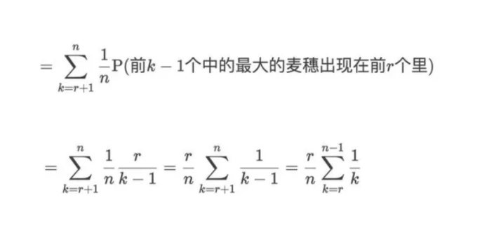
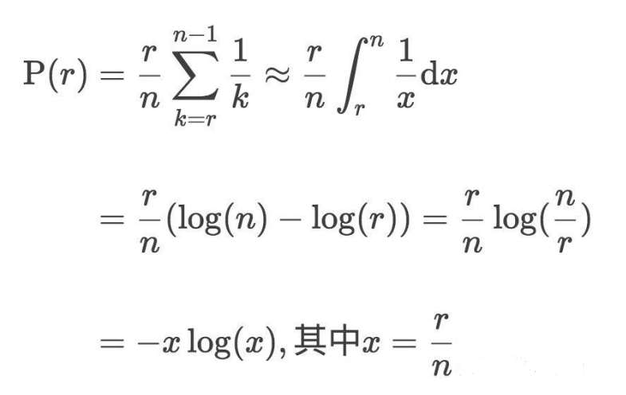

苏格拉底的麦穗
苏格拉底和弟子们走到一片麦田里，风吹麦浪，阵阵秋意袭来。
苏格拉底对弟子们说，“你们从麦田的这一头走到那一头，中间可以拾起一株麦穗，我们看看谁能找到最大的麦穗。”
他接着说 “当然，你们只有一次机会，一旦选定了，之后即便遇到更大的麦穗，也不能再采摘；
而且你们也不能回头去采摘那些已经错过的大麦穗。”
弟子们听完之后，面面相觑。
另外一种描述：
苏格拉底带弟子们来到一片麦田，让他们在田间小路走过，每人选摘一支最大的麦穗，不能走回头路，且只能摘一枝。
假设田间小路旁边一共有 n 只麦穗可以选择，最大麦穗出现在任何位置的概率均等，问如何摘下最大的麦穗？
我们可以制定类似的策略：
前r株麦穗直接pass掉,仅仅记下r株里面最大麦穗的大小,记作M
然后接下来的从r+1到n的麦穗,如果比M要大,那就选这一株麦穗;
(如果到最后更好的麦穗都没有出现，就选择最后一株麦穗。)
对于最大的一株麦穗,它出现在每一株麦穗的概率均等,且为1/n。
而对于r+1到n每一株麦穗,选取这一株麦穗k的前提是[1,k)中最大的麦穗在[1-r]中。
因此,选取这一株麦穗k的概率为:P=r/(k-1)

